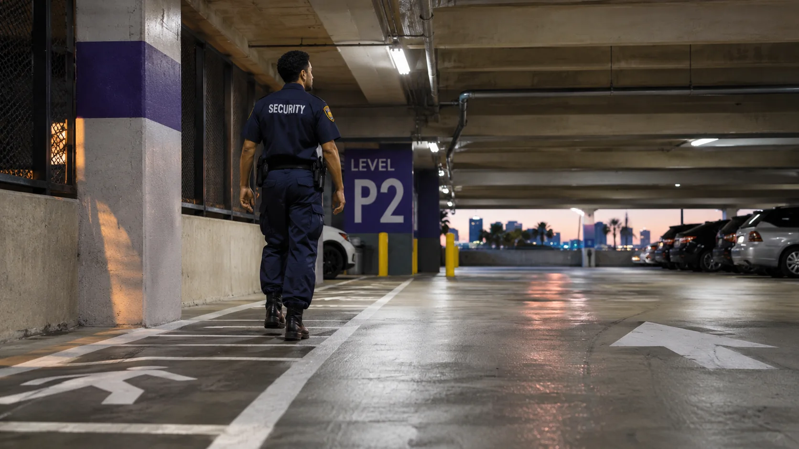

Parking Garage Security Guards for Los Angeles Commercial Properties

The last employees may leave after the property feels empty
A parking structure that is busy at midday can be quiet by early evening. Staff, tenants, and visitors may walk between vehicles, elevators, and stairwells when few other people are present. Poor lighting, unclear access procedures, and isolated areas can raise concerns for property managers. Security coverage is one possible part of a broader property safety plan.
Assess the property before deciding on coverage
A useful assessment considers operating hours, public access, pedestrian routes, elevator lobbies, stairwells, entrances, incident history, and existing access controls. A medical office parking garage may have different traffic patterns from a residential structure or a retail center. The goal is to define the actual assignment rather than assume every parking garage needs identical staffing.
What an assigned guard may be responsible for
Depending on the agreement and site policies, duties may include observing entrances, monitoring designated areas, documenting incidents, reporting maintenance concerns, and following established escalation procedures. A guard is not a substitute for functioning lighting, building maintenance, or emergency services. Duties and patrol boundaries should be clearly documented before service begins.
Evening schedules deserve specific attention
An assignment may need coverage during shift changes, closing periods, or other identified high traffic times rather than every hour of the day. Some properties may require fixed posts, while others may consider patrol arrangements. Availability, licensing requirements, and the site risk assessment should guide the decision.
A clearer scope leads to a more useful quote
When requesting security service, identify the property location, operating hours, access points, desired duties, and any known concerns. That information allows the provider to discuss a suitable staffing approach without promising that incidents can be prevented entirely.
Discuss Your Needs
Paradigm Security Services provides armed and unarmed security options. Request a quote to discuss parking structure coverage for your property.